1072B10 INLET MANIFOLD - R + R AND REPLACE SEAL
- Path
- Procedures > 10 ENGINE UNIT > 1072 INLET AND EXHAUST MANIFOLDS > 1072B INLET MANIFOLDS > 1072B10 INLET MANIFOLD - R + R AND REPLACE SEAL
- Kind
- repair procedure (removal / refitting; the operation number is the code)
- Applies to
- engines: 1.8 T.SPARK, 2.0 JTS, 1.9 JTD 16V; all production periods
- Interactive page
- https://sloeber94.github.io/elrnDB-aGt/en/#/125001075
Applies to: engines: 2.0 JTS; all production periods
 Removing
Removing
 Refitting
RefittingPosition the vehicle on a lift.
Proceed with the removal
Op. 1016A40 IGNITION COIL COVER ON CYLINDER HEAD- R+R.
Proceed with the removal
Op. 7055B54 UNDER-ENGINE GUARD - R R.
Proceed with the removal
Op. 1076B18 RIGID SECTION OF EXHAUST PIPE BETWEEN CATALYTIC CONVERTER AND SILENCER - R + R.
Proceed with the removal
Op. 1048A59 PIPE from flow meter to throttle casing hose - R.R..
Proceed with the removal
Proceed with the removal
Op. 1072D10 MODULAR INLET MANIFOLD - R+R.
Proceed with the removal
1056F60 TUBO COLLETTORE COMBUSTIBILE UNICO, completo di elettroiniettori - S.R.
.
1. Undo the bolts (1a) and remove the bracket (1b) after having released the band from the electrical wiring.
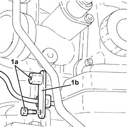
Applies to: engines: 2.0 JTS; all production periods
1. Releasae the fuel supply pipe to the high pressure pump (1a) from the fastening (1b) on the intake manifold.
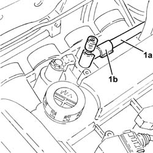
Applies to: engines: 2.0 JTS; all production periods
1. Release the electrical wiring (1a) from the band (1b) on the intake manifold.
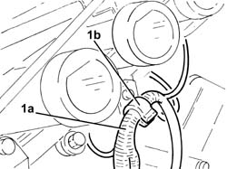
Applies to: engines: 2.0 JTS; all production periods
1. Undo the nuts (1a) and remove the intake manifold (1b) complete with phase transformer solenoid (1c).
2. Remove the intake manifold gasket.
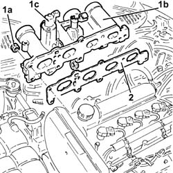
Applies to: engines: 2.0 JTS; all production periods
Refitting
Removing1. Place a new intake manifold gasket in position.
2. Place the intake manifold (2a), complete with phase transformer solenoid (2b), back in its housing and secure it tightening the nuts (2c) to the recommended torque.
Fastening | Component | Ø | Value (daNm) | |
|---|---|---|---|---|
2c | Nut | INLET MANIFOLD | M8 | (Cylinder head side) 2.3 - 2.8 |
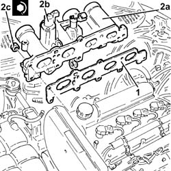
Applies to: engines: 2.0 JTS; all production periods
Fasten the electrical wiring to the band located under the intake manifold.
Fasten the fuel supply pipe to the high pressure pump to the fastening on the intake manifold.
Place the bracket in position and secure it using the bolts, then fasten the electrical wiring to the band.
Proceed with the refitting
1056F60 TUBO COLLETTORE COMBUSTIBILE UNICO, completo di elettroiniettori - S.R.
.
Proceed with the refitting
Op. 1072D10 MODULAR INLET MANIFOLD - R+R.
Proceed with the refitting
Proceed with the refitting
Op. 1048A59 PIPE from flow meter to throttle casing hose - R.R..
Proceed with the refitting
Op. 1076B18 RIGID SECTION OF EXHAUST PIPE BETWEEN CATALYTIC CONVERTER AND SILENCER - R + R.
Proceed with the refitting
Op. 7055B54 UNDER-ENGINE GUARD - R R.
Proceed with the refitting
Op. 1016A40 IGNITION COIL COVER ON CYLINDER HEAD- R+R.
Remove the vehicle from the lift.
Applies to: engines: 1.9 JTD 16V; all production periods
Removing
RefittingPosition the vehicle on a lift.
Make sure that the ignition key is in the OFF position, then disconnect the negative battery terminal (-)
Description | Connector | |
|---|---|---|
- | Battery | See A1B BATTERY ( BATTERY NEGATIVE ) |
Proceed with the removal
Op. 1008C10 POWER UNIT UPPER REACTION LINK R R.
Proceed with the removal
Op. 1060G80 DS ELECTRIC INJECTION CONTROL UNIT - R R.
Proceed with the removal
Op. 4450B04 RIGHT FRONT WHEEL R R.
Proceed with the removal
Op. 7055B54 UNDER-ENGINE GUARD - R R.
Proceed with the removal
Op. 7055B91 RIGHT FRONT WHEEL ARCH LINER - R.R..
Proceed with the removal
Op. 1092G10 SINGLE ENGINE BELT R R.
Proceed with the removal
Op. 1092A10 CRANKSHAFT SERVICES PULLEY - R.R..
Proceed with the removal
Op. 1092G20 ENGINE COMPONENT SINGLE BELT FIXED TENSIONER - ONE - R + R.
Proceed with the removal
Op. 1032D12 TIMING SYSTEM PROTECTIVE COVER(S) - R + R.
Proceed with the removal
Op. 1032B10 TOOTHED TIMING BELT - R + R FOR TIMING ADJUSTMENT OR REPLACEMENT.
Proceed with the removal
1. Disconnect the electrical connection from the engine coolant temperature sensor.
Description | Connector | |
|---|---|---|
1 | Engine temperature sending unit | See K36 ENGINE TEMPERATURE SENDER UNIT ( CONNECTORS ) |
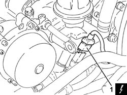
Applies to: engines: 1.9 JTD 16V; all production periods
1. Disconnect the electrical connections from the heater plugs.
Description | Connector | |
|---|---|---|
1 | Heater plug | See A40 HEATER PLUGS (CYL. 1) |
2. Disconnect the electrical connection for the pressure relief sensor.
Description | Connector | |
|---|---|---|
2 | Supercharging sensor | See K82 TURBOCHARGING SENSOR |
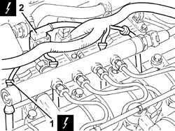
Applies to: engines: 1.9 JTD 16V; all production periods
1. Disconnect the electrical connection from the turbocharger vane actuator solenoid valve.
Description | Connector | |
|---|---|---|
1 | Turbine variable geometry control solenoid | See L36 VARIABLE GEOMETRY TURBINE SOLENOID VALVE ( CONNECTORS ) |
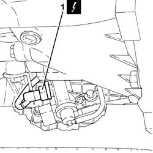
Applies to: engines: 1.9 JTD 16V; all production periods
1. Disconnect the electrical connection from the air flow meter.
Description | Connector | |
|---|---|---|
1 | Air flow meter | See K41 AIR FLOW METER ( FRONT ) |
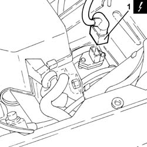
Applies to: engines: 1.9 JTD 16V; all production periods
1. Disconnect the electrical connection from the EGR system solenoid valve
Description | Connector | |
|---|---|---|
1 | EGR solenoid valve | See L30 EGR SOLENOID |
Release the wiring from the bands near the thermostat.
2. Loosen the band and disconnect the coolant return pipe from the engine coolant reservoir, thermostat side.
3. Loosen the band and disconnect the coolant outlet pipe from the cylinder head, coolant return pipe to the engine coolant reservoir.
4. Loosen the band and disconnect the flexible pipe from the rigid coolant return pipe to the engine coolant reservoir.
5. Loosen the bolts (5a) and remove the coolant return pipe to the engine coolant reservoir (5b).
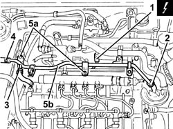
Applies to: engines: 1.9 JTD 16V; all production periods
1. Loosen the band and disconnect the air inlet hose from the connector on the throttle casing.
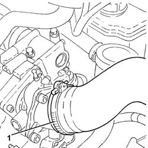
Applies to: engines: 1.9 JTD 16V; all production periods
1. Undo the bolts (1a) and remove the connector on the throttle casing (1b) complete with gasket (1c).
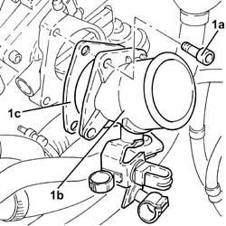
Applies to: engines: 1.9 JTD 16V; all production periods
1. Disconnect the vacuum pipe from the pneumatic valve on the throttle casing.
2. Undo the bolts (2a) and remove the electro-pneumatically operated throttle casing (2b) complete with gasket (2c).
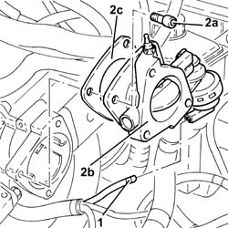
Applies to: engines: 1.9 JTD 16V; all production periods
Disconnect the vacuum pipe from the three-way connector on the brake servo vacuum intake pipe.
Disconnect the intermediate coupling for the vacuum pipe for the turbocharger vane position actuator control solenoid.
1. Undo the bolts fixing the exhaust gas outlet from the water/exhaust gas heat exchanger for the E.G.R. system, E.G.R. solenoid valve side.
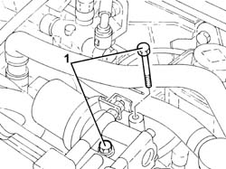
Applies to: engines: 1.9 JTD 16V; all production periods
1. Undo the nuts (1a) and move the oil vapour recovery pipe mounting bracket (1b) to the side.
2. Undo the fixing bolts (2a) and remove the E.G.R. system solenoid valve (2b).
3. Remove the gasket.
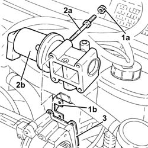
Applies to: engines: 1.9 JTD 16V; all production periods
1. Disconnect the rapid connector for the fuel return pipe from the fuel filter, fuel return manifold pipe side.
2. Disconnect the rapid connector for the fuel return pipe to the tank, fuel return manifold pipe side.
3. Loosen the band and disconnect the fuel return pipe from the pressure pump, fuel return manifold pipe side.
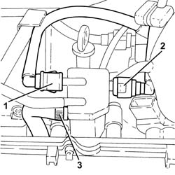
Applies to: engines: 1.9 JTD 16V; all production periods
1. Undo the bolts (1a) and remove the fuel return manifold pipe (1b) complete with pipe from the injectors to the fuel recovery manifold (1c).
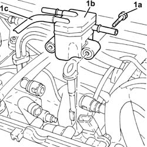
Applies to: engines: 1.9 JTD 16V; all production periods
1. Undo the bolt fixing the engine oil dipstick guide pipe to the pressure pump mounting.
2. Disconnect the electrical connection for the fuel pressure regulator.
Description | Connector | |
|---|---|---|
2 | Fuel pressure regulator | See N77 FUEL PRESSURE REGULATOR ( CONNECTORS ) |
Release the electrical wiring from the band and move it to the side.
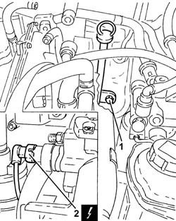
Applies to: engines: 1.9 JTD 16V; all production periods
1. Loosen the band and disconnect the condensed oil recovery pipe from the crankcase sump.
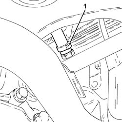
Applies to: engines: 1.9 JTD 16V; all production periods
1. Loosen the band and disconnect the oil vapour recovery pipe from the separator.
2. Loosen the band and disconnect the oil vapour recirculation pipe from the separator.
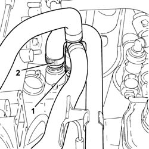
Applies to: engines: 1.9 JTD 16V; all production periods
Disconnect the electrical connection from the solenoid valve on the vacuum reservoir.
Description | Connector | |
|---|---|---|
- | Throttle body solenoid valve | See L62 BUTTERFLY CASING SOLENOID VALVE |
1. Undo the bolts (1a) and remove the mounting bracket (1b) complete with oil vapour separator (1c) and vacuum reservoir (1d).
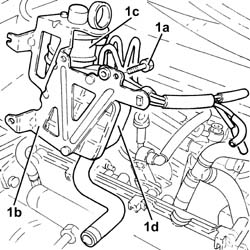
Applies to: engines: 1.9 JTD 16V; all production periods
1. Lock the rotation of the pressure pump drive pulley using two bolts.
2. Undo the pressure pump drive pulley nut.
Undo the two bolts for locking the rotation of the pressure pump drive pulley fitted previously.
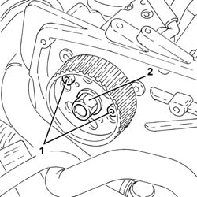
Applies to: engines: 1.9 JTD 16V; all production periods
1. Remove the pressure pump drive pulley (1a) using the tool (1b).
Description | Code | |
|---|---|---|
1b | Extractor | 1.860.854.001 |
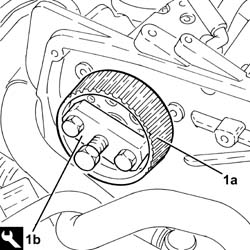
Applies to: engines: 1.9 JTD 16V; all production periods
1. Undo the nuts (1a) and remove the pressure pump (1b) from the support.
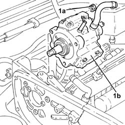
Applies to: engines: 1.9 JTD 16V; all production periods
1. Disconnect the electrical connection from the engine oil pressure warning light switch.
Description | Connector | |
|---|---|---|
1 | Engine oil pressure sensor (switch) | See K30 ENGINE OIL PRESSURE SENSOR SWITCH ( CONNECTORS ) |
2. Disconnect the electrical connection from the engine oil level sensor.
Description | Connector | |
|---|---|---|
2 | Engine oil level sensor | See K32 ENGINE OIL LEVEL SENSOR |
3. Disconnect the electrical connection from the engine rpm sensor.
Description | Connector | |
|---|---|---|
3 | Rpm sensor | See K46 RPM SENSOR ( CONNECTORS ) |
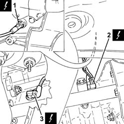
Applies to: engines: 1.9 JTD 16V; all production periods
1. Disconnect the earth lead from the alternator.
Description | Connector | |
|---|---|---|
1 | Alternator | See A10 ALTERNATOR |
2. Disconnect the earth lead from the starter motor.
Description | Connector | |
|---|---|---|
2 | Starter motor | See A20 STARTER' MOTOR |
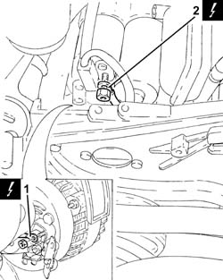
Applies to: engines: 1.9 JTD 16V; all production periods
1. Disconnect the electrical connection from the heater plugs control unit.
Description | Connector | |
|---|---|---|
1 | Heater plugs control unit | See M15 PLUG PREHEATING CONTROL UNIT |
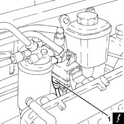
Applies to: engines: 1.9 JTD 16V; all production periods
1. Undo the bolts (1a) and remove the power assisted steering pump drive pulley (1b).
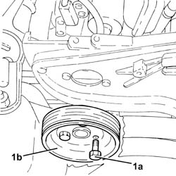
Applies to: engines: 1.9 JTD 16V; all production periods
1. Undo the bolts fixing the power assisted steering pump to the mounting.
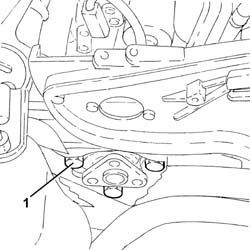
Applies to: engines: 1.9 JTD 16V; all production periods
Remove the guide pipe complete with engine oil dipstick.
1. Undo the bolts (1a) and remove the pressure pump mounting (1b).
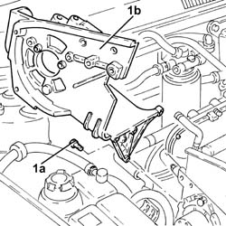
Applies to: engines: 1.9 JTD 16V; all production periods
1. Undo the nuts (1a) and remove the air chamber (1b) complete with gasket (1c).
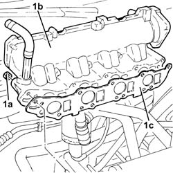
Applies to: engines: 1.9 JTD 16V; all production periods
Refitting
Removing1. Refit the air chamber (1a) complete with gasket (1b) back in its housing and secure it tightening the nuts (1c) to the recommended torque.
Fastening | Component | Ø | Value (daNm) | |
|---|---|---|---|---|
1c | Nut | INLET MANIFOLD | M8 | (Cylinder head side) 2.3 - 2.8 |
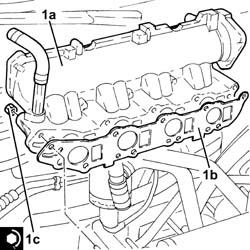
Applies to: engines: 1.9 JTD 16V; all production periods
1. Fit the pressure pump mounting (1a) and secure it using the bolts (1b).
Fastening | Component | Ø | Value (daNm) | |
|---|---|---|---|---|
1b | Bolt | INJECTION PRESSURE PUMP MOUNT | M8 | (Engine crankcase side) 2.3 - 2.8 |
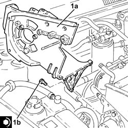
Applies to: engines: 1.9 JTD 16V; all production periods
Place the guide pipe complete with engine oil dipstick in position.
1. Position the power assisted steering pump in its housing and secure it tightening the bolts to the recommended torque.
Fastening | Component | Ø | Value (daNm) | |
|---|---|---|---|---|
1 | Bolt | POWER STEERING PUMP | M8 | (Mount side) 2.3 - 2.8 |
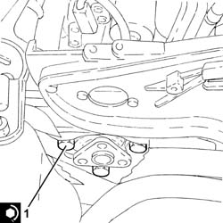
Applies to: engines: 1.9 JTD 16V; all production periods
1. Position the power assisted steering pump drive pulley (1a) in its housing and secure it tightening the bolts (1b) to the recommended torque.
Fastening | Component | Ø | Value (daNm) | |
|---|---|---|---|---|
1b | Bolt | POWER STEERING PUMP DRIVE PULLEY | M8 | (Power assisted steering pump side) 2.3 - 2.8 |
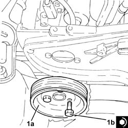
Applies to: engines: 1.9 JTD 16V; all production periods
Connect the electrical connection to the heater plugs control unit.
Connect the earth lead to the starter motor.
Connect the earth lead to the alternator.
Connect the electrical connection for the engine rpm sensor.
Connect the electrical connection to the engine oil level sensor.
Connect the electrical connection to the engine oil pressure warning light switch.
1. Position the pressure pump (1a) in its housing and secure it by tightening the nuts (1b) to the recommended torque.
Fastening | Component | Ø | Value (daNm) | |
|---|---|---|---|---|
1b | Nut | PRESSURE PUMP | M8 | (Mount side) 2.3 - 2.8 |
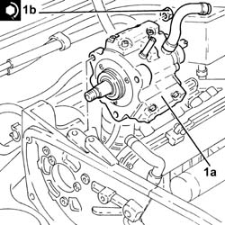
Applies to: engines: 1.9 JTD 16V; all production periods
1. Place the pressure pump drive pulley back in its housing.
2. Lock the rotation of the pressure pump drive pulley using two bolts.
3. Tighten the nut fixing the pressure pump drive pulley to the recommended torque.
Fastening | Component | Ø | Value (daNm) | |
|---|---|---|---|---|
3 | Nut | PRESSURE PUMP CONTROL PULLEY | M14 | 4.5 ÷ 5.5 |
Undo the two bolts for locking the rotation of the pressure pump drive pulley fitted previously.
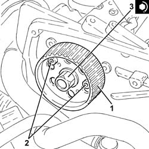
Applies to: engines: 1.9 JTD 16V; all production periods
Place the mounting bracket in position complete with oil vapour separator and vacuum reservoir and secure it using the bolts.
Connect the electrical connection to the solenoid valve on the vacuum reservoir.
Connect the oil vapour recirculation pipe to the separator and tighten the band.
Connect the oil vapour recovery pipe to the separator and tighten the band.
Connect the condensed oil recovery pipe to the crankcase sump and tighten the band.
Refit the engine wiring and secure it to the band.
Connect the electrical connection to the fuel pressure regulator.
Tighten the bolt fixing the engine oil dipstick guide pipe to the pressure pump mounting.
Place the fuel return manifold pipe in position complete with the pipe from the injectors to the fuel recovery manifold and secure it using the bolts.
Connect the fuel return pipe to the pressure pump, fuel return manifold pipe side and tighten the band.
Connect the rapid connector for the fuel return pipe to the tank, fuel return manifold side.
Connect the rapid connector for the fuel return pipe from the fuel filter, fuel return manifold pipe side.
1. Fit the E.G.R. system solenoid valve (1a) complete with gasket (1b) and secure it tightening the bolts (1c) to the recommended torque.
Fastening | Component | Ø | Value (daNm) | |
|---|---|---|---|---|
1c | - | - | - | - |
2. Place the oil vapour recovery pipe mounting bracket (2a) back in its housing and fasten it using the nuts (2b).
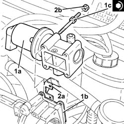
Applies to: engines: 1.9 JTD 16V; all production periods
1. Tighten the bolts fixing the exhaust gas outlet from the water/exhaust gas heat exchanger for the E.G.R. system, E.G.R. solenoid valve side to the recommended torque.
Fastening | Component | Ø | Value (daNm) | |
|---|---|---|---|---|
1 | - | - | - | - |
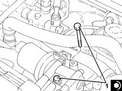
Applies to: engines: 1.9 JTD 16V; all production periods
Connect the intermediate coupling for the vacuum pipe for the turbocharger vane position actuator control solenoid.
Connect the vacuum pipe to the three-way connector on the brake servo vacuum intake pipe.
1. Refit the electro-pneumatically operated throttle casing (1a) complete with gasket (1b) back in its housing and secure it tightening the bolts (1c) to the recommended torque.
Fastening | Component | Ø | Value (daNm) | |
|---|---|---|---|---|
1c | - | - | - | - |
2. Connect the vacuum pipe for the pneumatic valve on the throttle casing.
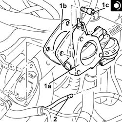
Applies to: engines: 1.9 JTD 16V; all production periods
1. Refit the conector on the throttle casing (1a) complete with gasket (1b) back in its housing and secure it tightening the bolts (1c) to the recommended torque.
Fastening | Component | Ø | Value (daNm) | |
|---|---|---|---|---|
1c | - | - | - | - |
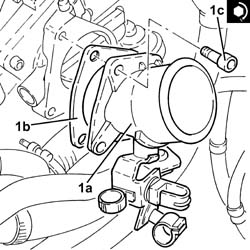
Applies to: engines: 1.9 JTD 16V; all production periods
Connect the air inlet hose to the connector on the throttle casing and tighten the band.
Place the coolant return pipe to the engine coolant reservoir in position and secure it using the bolts.
Connect the flexible pipe to the rigid coolant return pipe to the engine coolant reservoir and tighten the band.
Connect the coolant outlet pipe from the cylinderhead, coolant return pipe to the engine coolant reservoir side and tighten the band.
Connect the coolant return pipe to the coolant reservoir, thermostat side, and tighten the band.
Fasten the electrical wiring to the bands near the thermostat.
Connect the electrical connection to the E.G.R. solenoid valve.
Connect the electrical connection to the air flow meter.
Connect the electrical connection to the turbocharger vane actuator solenoid valve.
Connect the electrical connection to the pressure relief sensor.
Connect the electrical connections to the heater plugs.
Connect the electrical connection to the engine coolant temperature sensor.
Proceed with the refitting
Proceed with the refitting
Op. 1032B10 TOOTHED TIMING BELT - R + R FOR TIMING ADJUSTMENT OR REPLACEMENT.
Proceed with the refitting
Op. 1032D12 TIMING SYSTEM PROTECTIVE COVER(S) - R + R.
Proceed with the refitting
Op. 1092G20 ENGINE COMPONENT SINGLE BELT FIXED TENSIONER - ONE - R + R.
Proceed with the refitting
Op. 1092A10 CRANKSHAFT SERVICES PULLEY - R.R..
Proceed with the refitting
Op. 1092G10 SINGLE ENGINE BELT R R.
Proceed with the refitting
Op. 7055B91 RIGHT FRONT WHEEL ARCH LINER - R.R..
Proceed with the refitting
Op. 7055B54 UNDER-ENGINE GUARD - R R.
Proceed with the refitting
Op. 4450B04 RIGHT FRONT WHEEL R R.
Proceed with the refitting
Op. 1060G80 DS ELECTRIC INJECTION CONTROL UNIT - R R.
Proceed with the refitting
Op. 1008C10 POWER UNIT UPPER REACTION LINK R R.
Connect the negative battery terminal (-).
Remove the vehicle from the lift.
Applies to: engines: 1.8 T.SPARK; all production periods
Removing
Refitting- Position the vehicle on a lift.
- Make sure that the ignition key is in the OFF position, then disconnect the battery terminal (-).
Description | Connector | |
|---|---|---|
- | Battery | See A001 Battery |
- Op. 1016A40 IGNITION COIL COVER ON CYLINDER HEAD- R+R
- Op. 1056B60 TUBO COLLETTORE COMBUSTIBILE UNICO, COMPLETO DI ELETTROINIETTORI - S.R.
- Op. 1072D10 MODULAR INLET MANIFOLD - R+R
- Undo the bolts (1a) and remove the bracket (1b) connecting the intake manifold to the bracket on the engine for the reaction rod.
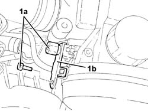
Applies to: engines: 1.8 T.SPARK; all production periods
- Undo the nuts (1a) and remove the intake manifold (1b).
- Remove the gasket.
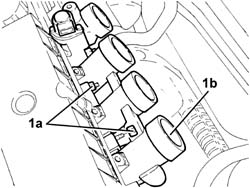
Applies to: engines: 1.8 T.SPARK; all production periods
Refitting
Removing- Place the intake manifold, complete with a new gasket, back in its housing and secure it tightening the nuts to the recommended torque.
Fastening | Component | Ø | Value (daNm) | |
|---|---|---|---|---|
- | Nut | INLET MANIFOLD | M8 | 2.3 - 2.8, daNm |
- Place the bracket connecting the intake manifold to the bracket on the engine for the reaction rod back in its housing and secure it using the bolts.
- Op. 1072D10 MODULAR INLET MANIFOLD - R+R
- Op. 1056B60 TUBO COLLETTORE COMBUSTIBILE UNICO, COMPLETO DI ELETTROINIETTORI - S.R.
- Op. 1016A40 IGNITION COIL COVER ON CYLINDER HEAD- R+R
- Connect the negative battery terminal (-).
- Remove the vehicle from the lift.
Topics linked from this page (15)
- 1008C10 POWER UNIT UPPER REACTION LINK R R
- 1016A40 IGNITION COIL COVER ON CYLINDER HEAD- R+R
- 1032B10 TOOTHED TIMING BELT - R + R FOR TIMING ADJUSTMENT OR REPLACEMENT
- 1032D12 TIMING SYSTEM PROTECTIVE COVER(S) - R + R
- 1048A59 PIPE from flow meter to throttle casing hose - R.R.
- 1060G80 DS ELECTRIC INJECTION CONTROL UNIT - R R
- 1072D10 MODULAR INLET MANIFOLD - R+R
- 1076B18 RIGID SECTION OF EXHAUST PIPE BETWEEN CATALYTIC CONVERTER AND SILENCER - R + R
- 1092A10 CRANKSHAFT SERVICES PULLEY - R.R.
- 1092G10 SINGLE ENGINE BELT R R
- 1092G20 ENGINE COMPONENT SINGLE BELT FIXED TENSIONER - ONE - R + R
- 4450B04 RIGHT FRONT WHEEL R R
- 5530B10 BATTERY - R+R
- 7055B54 UNDER-ENGINE GUARD - R R
- 7055B91 RIGHT FRONT WHEEL ARCH LINER - R.R.